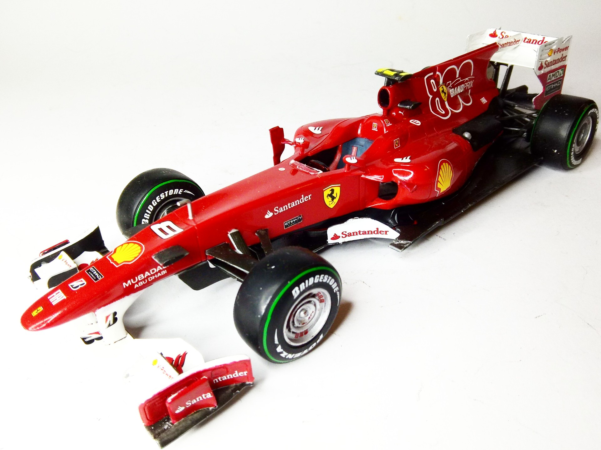
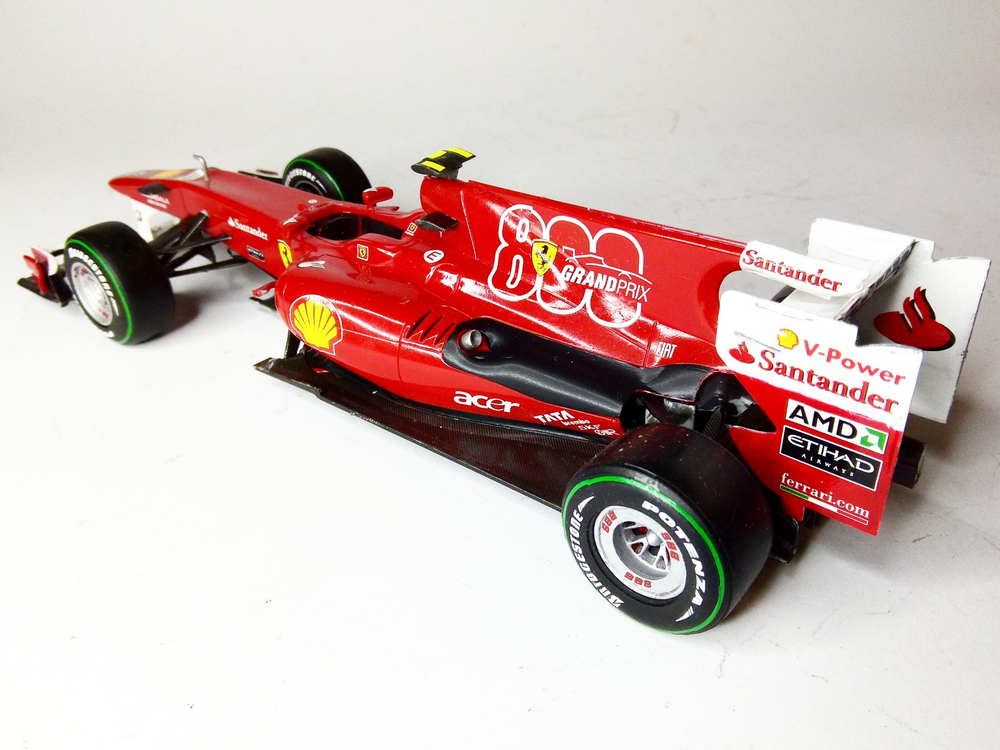

Auto e veicoli stradali · scale model archive
Ferrari F10 (800th Ferrari F1 race)
Ferrari F10 (800th Ferrari F1 race) — Kit: Revell, Scale: 1/24. Nice car lines. The Livery is celebrating Ferrari's 800th F1 grand prix race, Raced in…

Photo gallery

English description
Nice car lines. The Livery is celebrating Ferrari's 800th F1 grand prix race, Raced in 2010 F1 season
#1/24 #Revell #Ferrari #F10
Descrizione italiana
Belle linee della vettura. La livrea celebra l’800° Gran Premio di Formula 1 della Ferrari; corse nella stagione 2010.